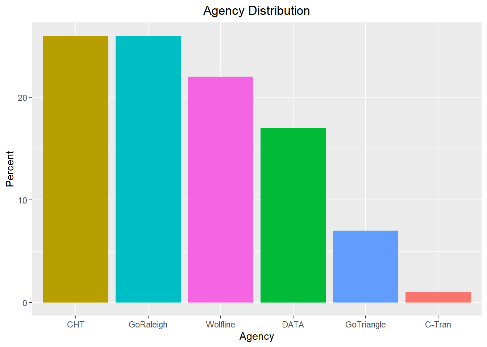
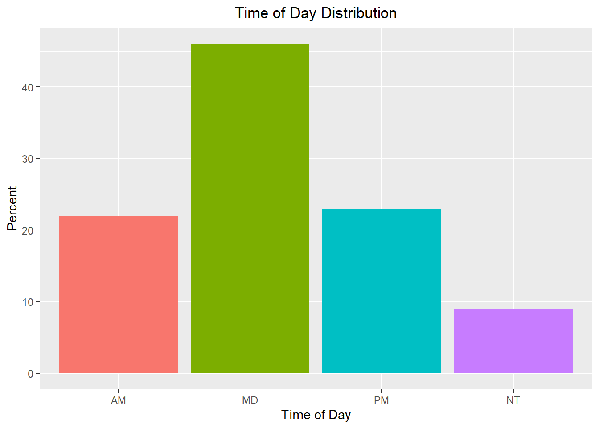
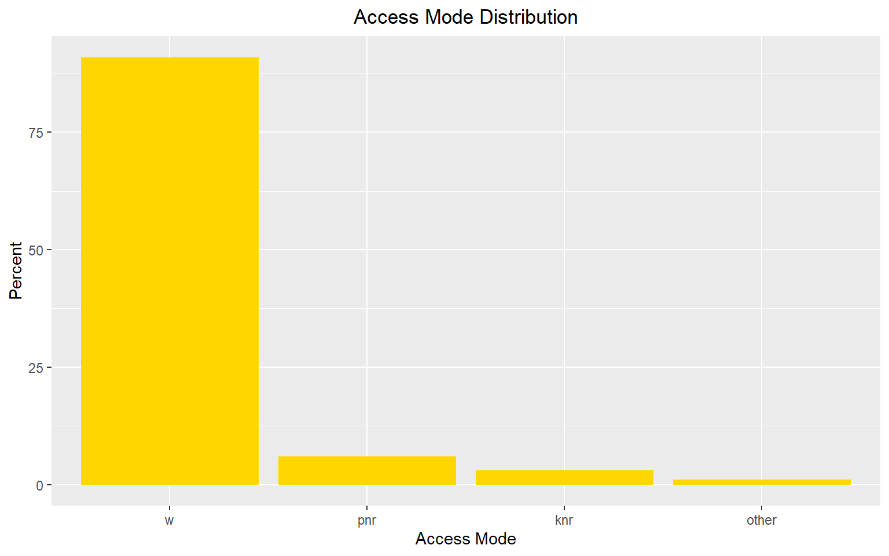
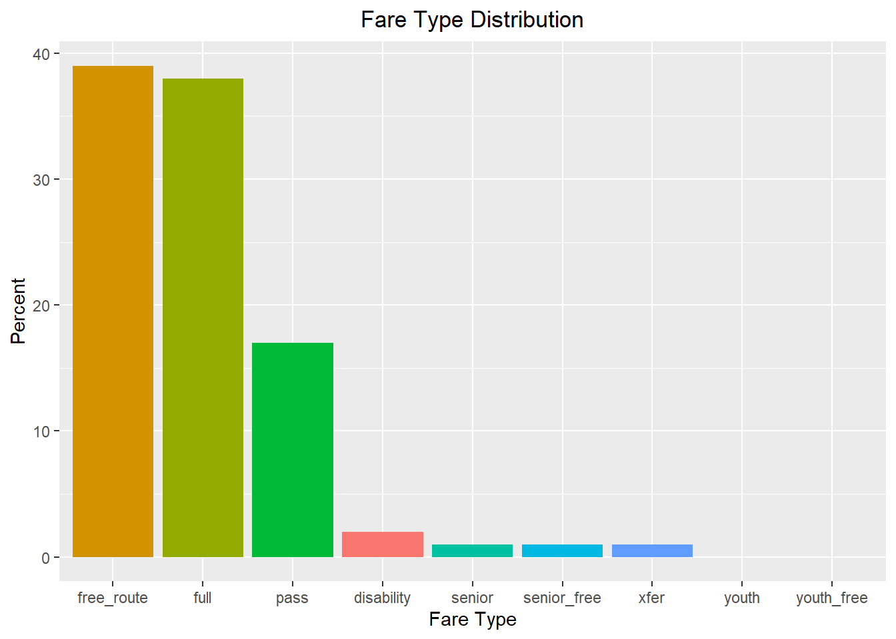

On-board Survey Processing
Introduction
On-board surveys ask transit riders a series of question while they are on the bus in order to obtain detailed information about demographics, trip purpose, modes used, and other variables. These targeted surveys are critical for understanding transit users in the region. Due to the small size of the transit market in the Triangle and the small household survey sample size, the household survey does not contain enough transit trips to estimate the behavior of these travelers.
In the Triangle, a survey of GoTriangle and DCHC transit was conducted in 2014 (excluding Duke Transit). CAMPO agencies were surveyed in 2015 along with new GoTriangle routes. These are used to gain insight into the transit market.
Combining surveys
Unlike the household surveys, the transit surveys were collected by different companies. Combining the surveys required translating the different field codes from each into a combined set of values. The surveys collected the same basic information, which made this process easier. Additionally, because different routes were collected in each survey, no routes were double counted and no adjustments to the sample weights were needed.
Geocoding
As with the household survey, the transit trip latitude/longitude values were translated into TRMG2 TAZs. For a transit trip, this includes the home, origin, destination, boarding, and alighting locations. A sample of this is shown in the table below:
| route | weight | home_taz | orig_taz | board_taz | alight_taz | dest_taz |
|---|---|---|---|---|---|---|
| Route 2: Falls of Neuse- INBOUND toward Downtown | 6.76 | 1448 | 2651 | 2542 | 1429 | 1935 |
| Route 1: Capital- OUTBOUND toward Triangle Town Center | 7.45 | 1781 | 1435 | 1429 | 1446 | 1448 |
| Route 2: Falls of Neuse- INBOUND toward Downtown | 6.76 | 1467 | 1700 | 1699 | 1429 | 1467 |
| C-Tran: Route 2: COUNTERCLOCKWISE | 2.83 | 1892 | 1892 | 1874 | 2209 | 2209 |
| C-Tran: Route 4: OUTBOUND toward NC Hwy 55 | 2.73 | 2339 | 2335 | 2269 | 2326 | 2339 |
| C-Tran: Route 5: INBOUND toward Train Station | 2.45 | 1646 | 2180 | 2180 | 2269 | 1646 |
Reasonableness checks
A high level review of the combined survey was performed to make sure processing had not introduced errors. Some of those checks are shown in the charts below. All dimensions checked looked reasonable.
Agency

Time of Day

Access Mode

Fare Type

Survey Assignment
For an additional check on both the on-board survey processing and the model’s route network, the on-board survey was assigned. This involved processing the survey into the appropriate matrices by time of day, transit mode, and accesss mode. The model assignment macros in TransCAD were used to assign these to the route system, and the results were compared to reported ridership by route.
The percent root mean square error (%RMSE) for route-level boardings was 96.8%. The agency-level %RMSE was 52.63%. The table below shows the agency-level comparison.
| Agency | Observed | Modelled | Difference | Absolute Difference | Percent Difference |
|---|---|---|---|---|---|
| CAT | 23,218 | 39,299 | 16,081 | 16,081 | 69.26 |
| CHT | 26,371 | 21,407 | -4,964 | 4,964 | -18.82 |
| CTRAN | 1,003 | 1,805 | 802 | 802 | 79.96 |
| DATA | 21,601 | 24,554 | 2,953 | 2,953 | 13.67 |
| NCSU | 16,699 | 18,255 | 1,556 | 1,556 | 9.32 |
| TT | 9,184 | 15,399 | 6,215 | 6,215 | 67.67 |
These differences are large, but manual path checking did not uncover any errors. This test assignment was performed on a network with a rough initial guess of travel times, which likely contributed to these differences. Further differences may be because the surveys were from 2014 and 2015 while the transit network is 2016. Any changes in route alignments or offerings would lead to higher discrepancies.
More attention will be paid to agency- and route-level ridership comparisons during model validation. It may be that fares or other route attributes received from stakeholders need to be adjusted. One positive result of this early test was that all routes received ridership, which indicates no critical accessibility flaws in the network.
Caliper Corporation, 2022